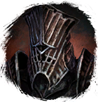
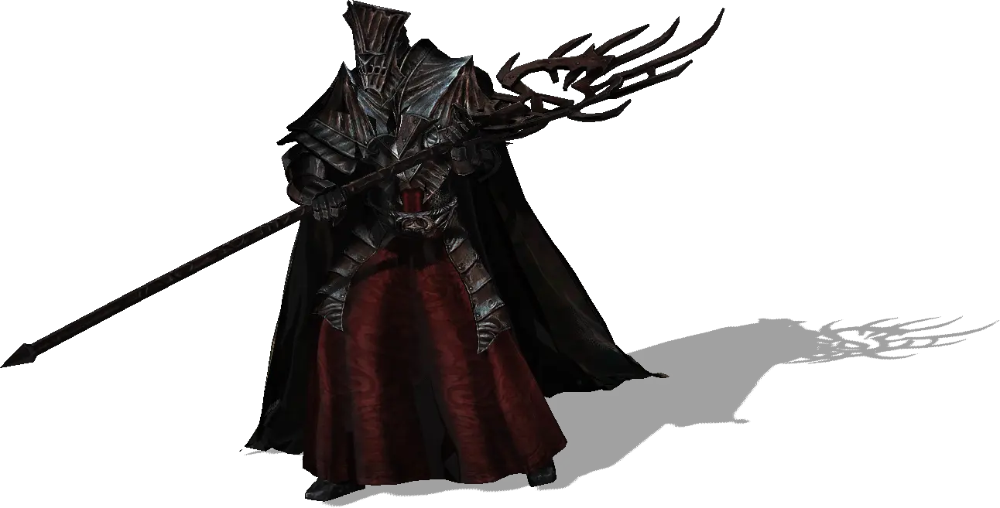

Открыть в интерактивной вики →

| Уровень | лёгк. 95 / норм. 110 / тяжел. 130 |
|---|---|
| Зоны атаки | ближняя, дальняя, ментальная |
| Шанс дропа 100% — уровни | лёгк. 1-70 / норм. 1-70 / тяжел. 1-90 |
| Шанс дропа 90% — уровни | лёгк. 71-85 / норм. 71-85 / тяжел. 91-105 |
| Шанс дропа 70% — уровни | лёгк. 86+ / норм. 86+ / тяжел. 106+ |
| Группа боссов | Страх |
| Сила (PvE) | лёгк. 5273 / норм. 7734 / тяжел. 10 405 |
| Аспект арены | Yantrei |
| Здоровье | лёгк. 14 000 / норм. 36 000 / тяжел. 60 000 |
| Мана | 17 000 |
| Выносливость | 11 000 |
Команда


Навыки


Дроп


Требования для входа

Путь по картам
Статистика
 |  |  | |||
| Уровень: 95 | Уровень: 110 | Уровень: 130 | |||
Здоровье: 14 000 Мана: 17 000 Выносливость: 11 000 | Здоровье: 36 000 Мана: 17 000 Выносливость: 11 000 | Здоровье: 60 000 Мана: 17 000 Выносливость: 11 000 |
Умения
| Удар Повреждение брони Обычная атака | Огненный Шар Теневой Удар | Теневая аура Аура Ужаса Удар в живот Отупление Булавка в глаз Явление смерти Укол Куклы Заражение Отравление |
Иммунитеты / особые умения
Устойчивость перед лицом смерти
Устойчивость к обездвиживанию
Локация
Квартал Геурократоса